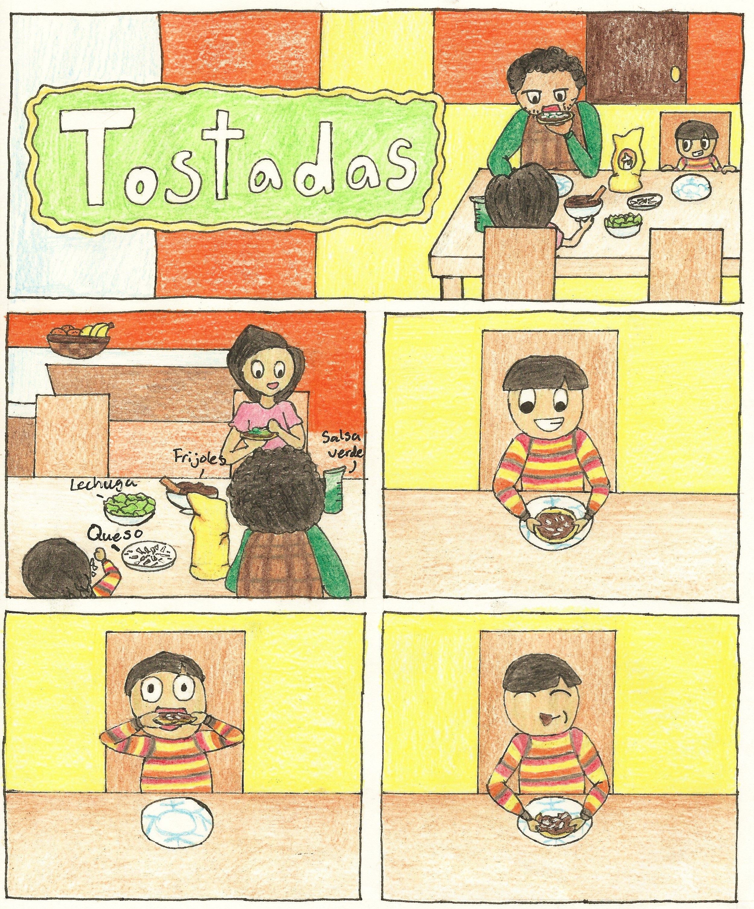
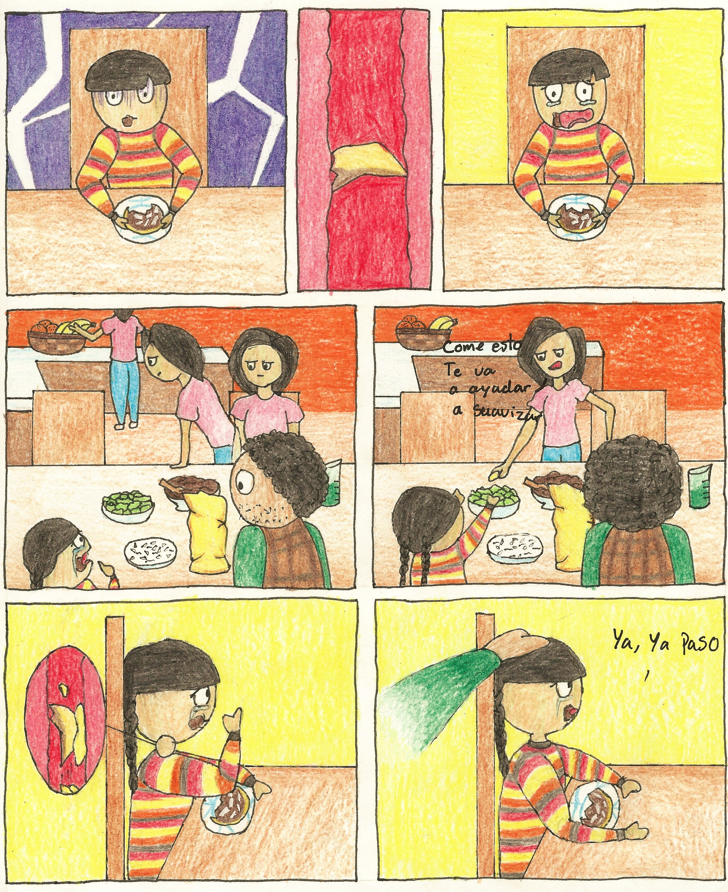
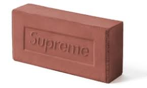
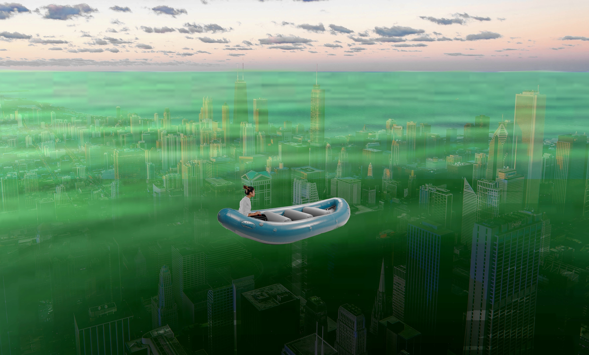

Lilia Isabel Aguirre LugoFFAR Prompt Portfolio
Hello! Welcome to my portfolio!
Below, each button will revel a prompt. For everything to run smoothly,
click once to reveal the prompt then click again to remove it to go to the next one.
Turn on sound


The object that I choose to be a part of the V&A Rapid Response
collection is the Supreme Brick. The reason why I believe that
this object could collected is because the Supreme Brick is an
example of how anything can be sold as long as it is name brand.
When this object was first introduced, people made a mockery
of it because, of course, it was just a typical red clay brick
with the name Supreme carved in it. However, on the day of its
release, it sold out immediately at the price of 30$, but, when
being resold online, the price of the brick would go up to 1 000$,
and people where still trying to purchase it. The skateboarding
brand Supreme sold this product with the intention of it being a
joke, they have done this previously with a hammer and a calculator,
but the attention that it received was quite impactful and it started
discussions about the youth’s spending habits.

Supreme
Supreme Brick
Red Clay
2016
The image I chose for my GIF
is a still from a game I used to play as a kid called Wizard 101.
The reason why I chose this image for my GIF as a representative of
a “postinternet” condition is because it has a nostalgia factor.
Digital art is often representative of nostalgia. In fact, that is
what inspired the Vaporwave aesthetic.Myself, and many others, recently
restarted playing this game because of nostalgia.
“Border Tuner”, by Rafael Lozano-Hemmer, shows borderlands as something
that creates a separation on a land where there was already an existing
culture. This installation was setup at the border of El Paso, Texas and
Ciudad Juarez, Chihuahua. These cities are so close to each other and
have things in common, such as culture and weather conditions, yet they
are separated and do not have a direct way of communicating with each other.
The purpose of “Border Tuner” is to connect these two sides allowing people
with different and yet also similar perspectives to talk to each other and
doing so in a very noticeable way with interactable spotlights. These
lights emphasize the connection with the two cities and the symbolism of
crossing the border and reaching another person.
My Own Borderlands
The Future is Overwhelmed

I chose this visual to depict "The Future is Overwhelmed" because
I believe that we will eventualy take so much from the earth
that the land will collapse and submerge.
The Words
“No one will ever care about you”
Those are the words you were
Raised on. The ones
Leading you through this quarantine.
Sending messages and memes in
Hopes of being missed. Unseen is
Abandonment. A number in
Notifications.
I’m here
I’m attached to you as
You to your friends. Remember that
I’m who’s important.
I’m here to hold you. Here to
Talk too. Speak words they will
never say to you.
I’m right here. Because as your father told you:
“No one will ever care about you, which is why
You must take care of yourself.”